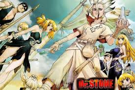

| 2 |

|
Dr stone |
l día que Taiju, un adolescente fuerte pero algo palurdo, se decide por fin a declararle su amor a Yuzuriha, sucede algo radical e inesperado: justo un segundo antes de la declaración, causas desconocidas generan un intenso destello que lleva al total de la humanidad a convertirse instantáneamente en piedra. Después de miles de años, durante los que ha luchado por no perder la consciencia, Taiju finalmente emerge de la piedra y vuelve a la normalidad. Aunque sólo para descubrir que el resto de la humanidad jamás despertó a excepción de su amigo Senku, un genio de vocación científica y mentalidad mucho más pragmática. Juntos, encuentran una fórmula para volver a la vida a muchas de las estatuas que no se han partido en pedazos con el paso de los siglos. Llegados a este punto se marcan como objetivo reconstruir la civilización desde sus cimientos y tratar de alcanzar el mismo desarrollo tecnológico que había antes de la catástrofe de origen desconocido. Pero tienen que hacerlo de la forma más acelerada posible, ya que no quieren morirse en la edad de piedra. |
https://mangas.in/manga/dr-stone
|